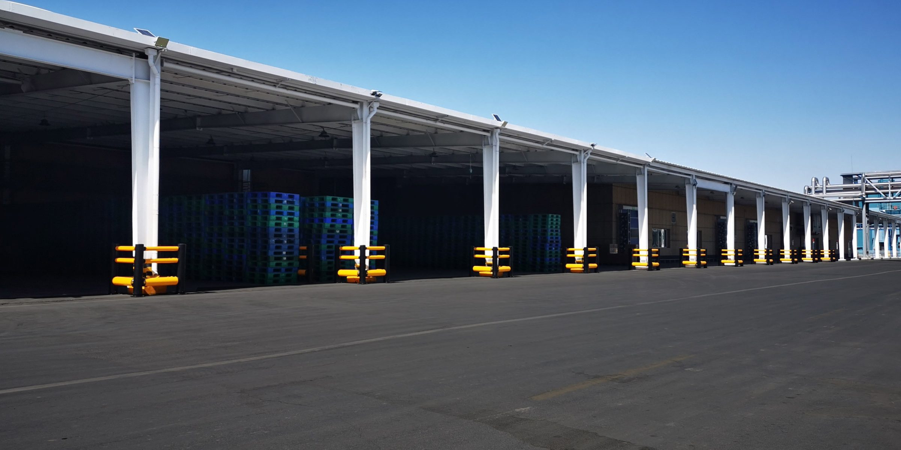

Thien Khoi launches Safety Solutions for factories and warehouses in Northern Vietnam
Thien Khoi is known for Yen Bai white marble. From November 2026 we also work on something new: keeping people in factories and warehouses safe from forklifts, falling racks and slips.

Photo: manufacturerThien Khoi Safety Solutions works to reduce collisions, slips and falls in factories and warehouses in Northern Vietnam's industrial parks. We work with the people responsible for safety and operations: EHS managers, warehouse managers, plant managers and maintenance teams.
This line has two product ranges. Polymer barriers include pedestrian barriers, forklift barriers, rack and column guards, floor-level guard rails, wheel stops, safety gates and loading bay guards. The polymer rail flexes on impact and returns to shape, within the range that barrier size is designed for. Floor safety tape includes marking tape, anti-slip tape, reflective tape and photoluminescent tape. The products are made by specialist manufacturers. Thien Khoi surveys, recommends, supplies and installs.
Every recommendation starts with an on-site survey. The surveyor visits during a running shift and follows the flow of goods from the receiving door, through the racking area, to the dispatch dock, then the stairs and exit routes. In each zone, we measure the stretch to fix, check the floor, and note the vehicles that pass and any old impact marks. You then receive a recommendation split by zone: what to do first, what to leave for a later phase, what only needs floor lines. Installation goes stretch by stretch, with no need to shut down a whole area.
Your contact is Le Huy Vuong, Sales Director, Northern Vietnam, from the first call until installation is finished. Call or WhatsApp +84 948 922 368, email sales01@datrangyenbai.com, or send photos of the spot through the survey booking page. We survey in Hanoi and the northern provinces. If your warehouse is farther away, send photos first and we will discuss.
This line operates under THIEN KHOI MINERAL XNK COMPANY LIMITED, tax code 0110550912, the same legal entity as our white marble business. Before calling, you can check your own warehouse with the tools already on this website.
Available on this website for you to look at first
- 7 warehouse zones where collisions and slips happen, each with the risk, how to stop it and one thing to do now
- The quick selector and the 10-point self-check, for a walk through the warehouse during a shift
- Insights: steel or polymer barriers, floor paint or floor tape, the floor marking color chart, separating pedestrians and forklifts
- 25 manufacturer test videos: forklifts hitting barriers, water on anti-slip tape, photoluminescent tape with the lights off
- Resources: printable checklist, catalogues, floor color chart, sent by email or WhatsApp after you register
- FAQ for the questions people usually ask before a survey
If your factory or warehouse in Northern Vietnam needs its walkways, racks or stairs checked, call or WhatsApp: +84 948 922 368.